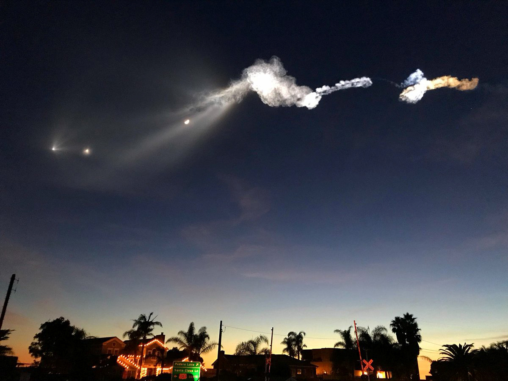
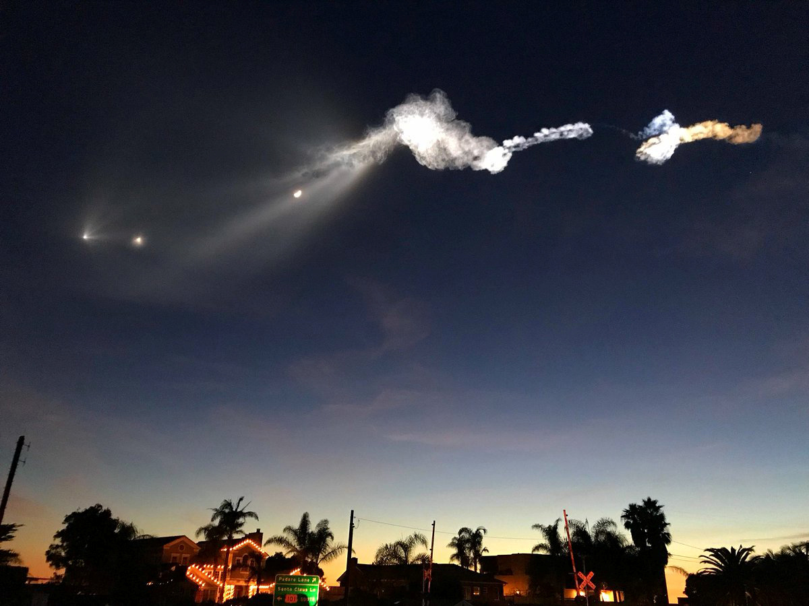

More Information
Falcon 9 Flight 20 historic first-stage landing at CCAFS Landing Zone 1, December 22, 2015: Falcon 9 flight 20
On December 22, 2015, SpaceX launched the highly anticipated return-to-flight mission after the loss of CRS-7, inaugurating a new Falcon 9 Full Thrust version of its flagship rocket featuring increased performance, notably thanks to subcooling of the propellants. This first mission of the upgraded vehicle launched a constellation of 11 Orbcomm-OG2 second-generation satellites. Performing a controlled-descent and landing test for the eighth time, SpaceX managed to return the first stage successfully to the Landing Zone 1 at Cape Canaveral, marking the first successful recovery of a rocket first stage that launched a payload to orbit.
An essentially new launch vehicle, much larger and with greater thrust than Falcon 9 v1.0—on September 29, 2013, a demonstration launch. Although the rocket carried CASSIOPE as a primary payload, CASSIOPE had a payload mass that is very small relative to the rocket's capability, and it did so at a discounted rate—approximately 20% of the normal published price for SpaceX Falcon 9 LEO missions—because the flight was a technology demonstration mission for SpaceX.
After the second stage separated from the booster stage, SpaceX conducted a novel high-altitude, high-velocity flight test, wherein the booster attempted to reenter the lower atmosphere in a controlled manner and decelerate to a simulated over-water landing. The test was successful, but the booster stage was not recovered.


 

.jpg)